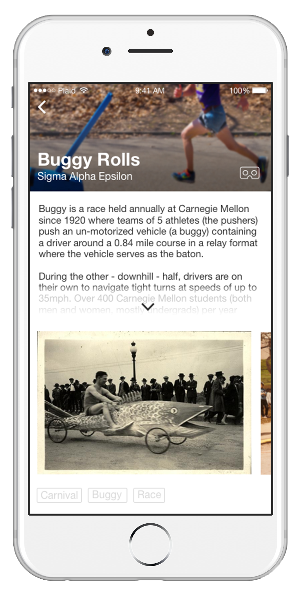
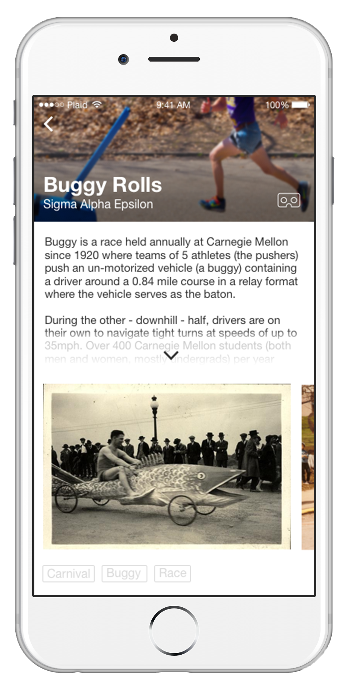
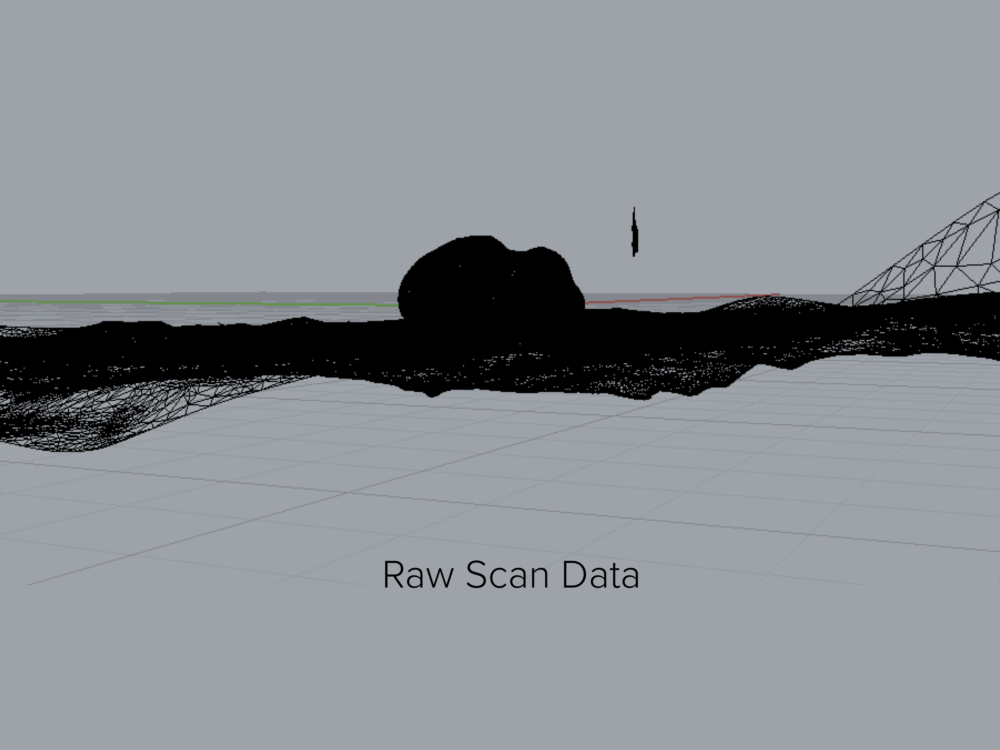
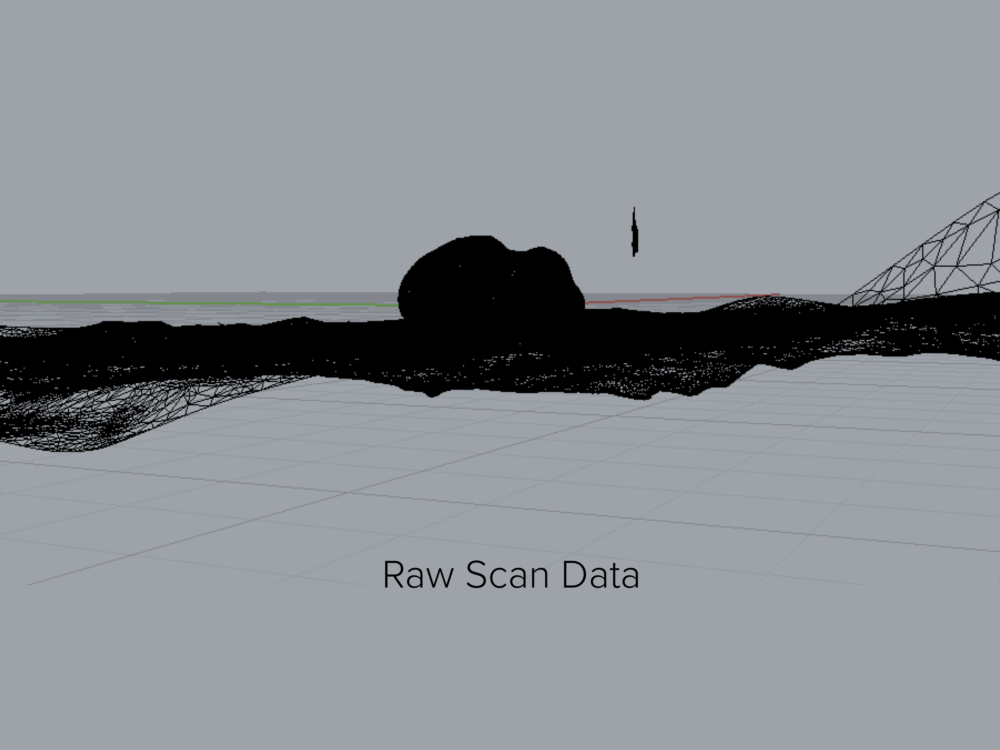
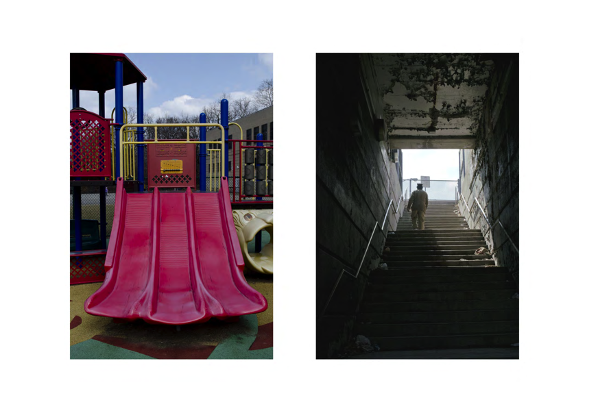
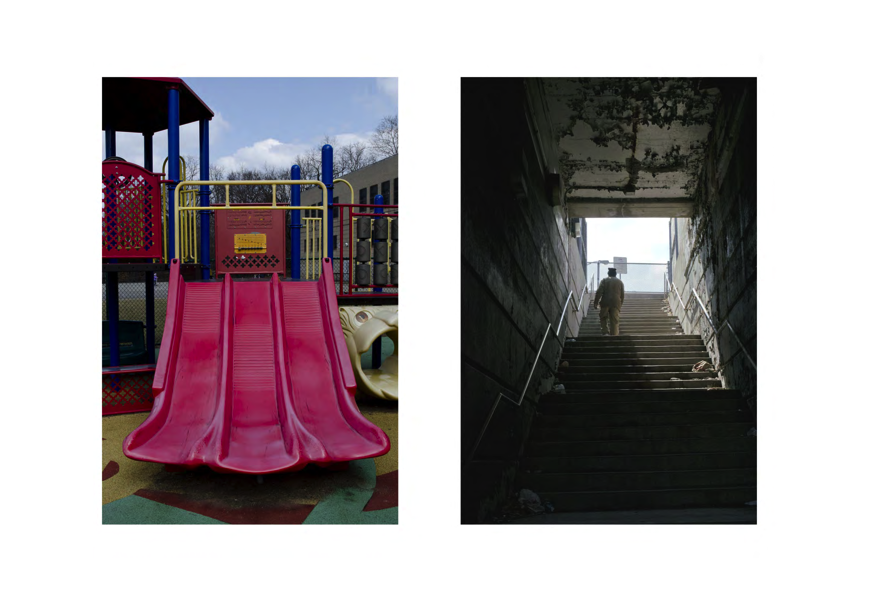
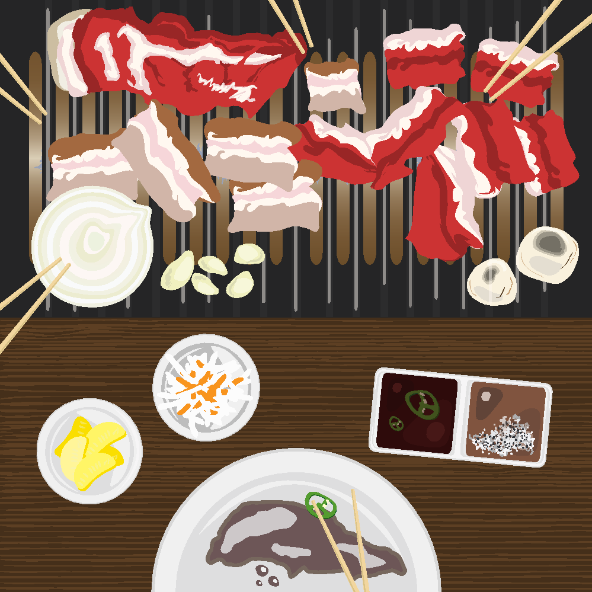
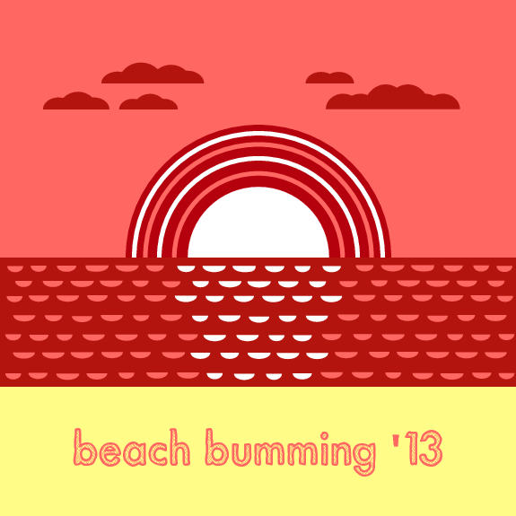
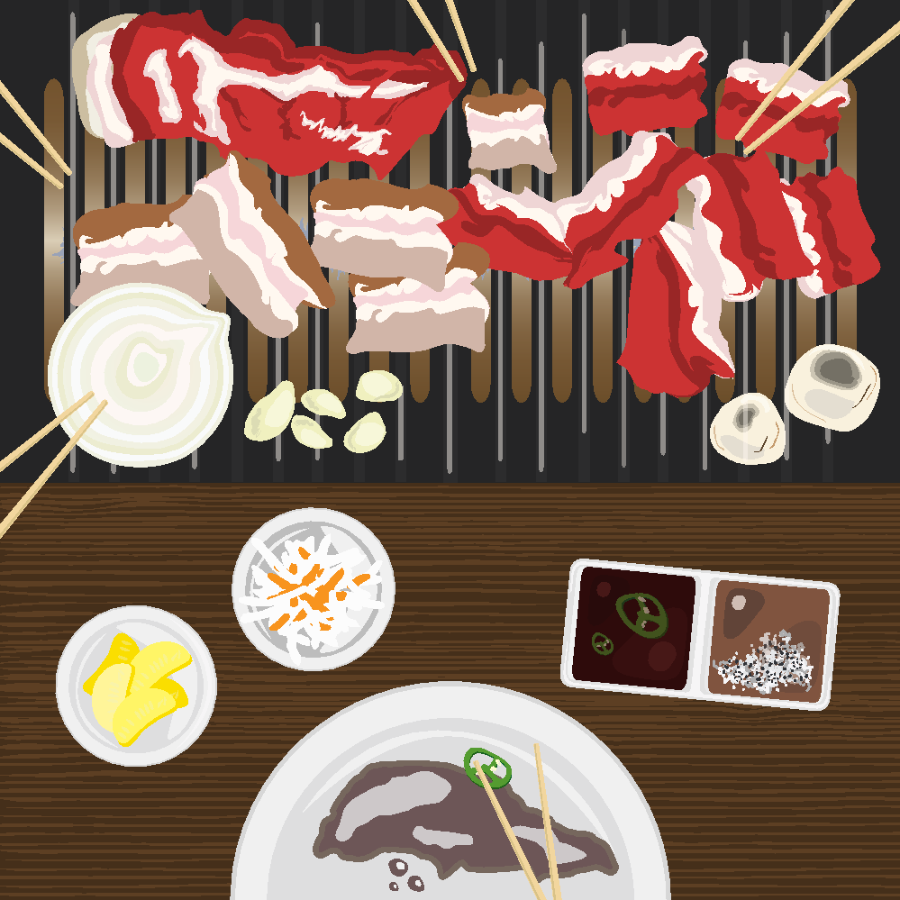
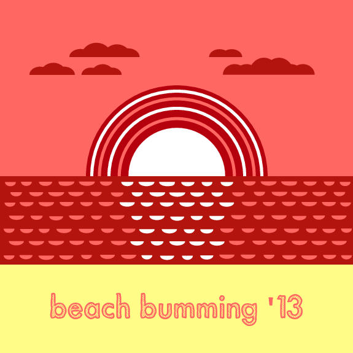

Portfolio


About
Yo, I'm Joe J. Jung. Born and raised in Los Angeles, chilling in Pittsburgh (literally). Presently, I'm a UI/UX designer (to be) studying art, design, and human-computer interaction at Carnegie Mellon University. I'm looking to create amazing experiences that can help change the world and I'm dying to see where it might bring me.
When I'm not working on my designs or work, you can catch me exploring my neighborhood with my trusty camera, experimenting with funky food to feed my hungry friends and family, or just cruising around wherever the road leads me on my Fuji track-bike.
Some things I enjoy and people that inspire me in no specific order: Nujabes (ok this is #1), my father (#2), Dumbfoundead, Kanye West, Cristiano Ronaldo, minimalism, Windows Phone OS, iOS jailbreaks, hip-hop instrumentals, 5 panel caps, technology in wooden casings, Korean barbeque, and r/AccidentalRenaissance.


 



 



 



 


